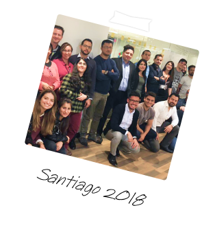

Pablo
Product Design Engineer
Simpler security, ~90% fewer calls: Itaú’s self-service lock card experience.
- I led the UX process end-to-end, from stakeholder alignment to delivery
- Some data is hidden due to confidentiality

Design Impact

~ X%
Drop in support calls related to card blocks

~ $X
Saved in support costs over ~6 months

~ X+
Feature adopted by users in the first semester

X
Security perception check by CSAT
Business Context
Every month, thousands of Itaú clients in Chile lost or misplaced their cards. Panic set in, urgent calls surged, users waited on hold just to feel safe. It triggering nearly X support requests per month. This added extra work to support teams already handling a wide range of tasks, stretching their capacity and exposing gaps in the self service experience.
Key Stages
Uncovering key pain points in card blocking through interviews and mapping
After aligning with the business, I conducted an empathy map workshop based on interviews with frequent support callers. It revealed key emotions during card loss: urgency, doubt, and lack of control. Sharing these insights helped create urgency internally, turning a recurring issue into a product priority.
Aligning hypotheses and prioritizing solutions with stakeholders
During prioritization and brainstorming sessions with stakeholders, we explored ideas based on three key factors: user impact, internal feasibility, and business value. This helped align expectations early and shape a solution that was desirable, viable, and feasible. The temporary card lock emerged as a key initiative, initially framed for the mobile channel.
Co-designing and iterating a mobile-first card lock experience with stakeholders
After defining the problem and opportunity areas, I focused on designing and prototyping multiple interactive experiences to trigger early conversations with brand managers, IT and cybersecurity. The goal was not just to visualize a solution, but to create tangible flows that enabled meaningful feedback, exposed technical feasibility, and aligned with Itaú’s design system and internal standards.
Main validations with customers through moderated testing
In this stage to validate the main design hypothesis, I conducted moderated
usability test (Qualitative Research) with 15 clients from two of Itaú’s
segments (Sucursal and Personal Bank), including both men and women with
diverse digital and financial maturity levels.
The main trends after user research:
- Simplicity and instant confirmation build trust faster than layered flows.
- Redundant access points help users find key actions fasterz
- (*) Users were 3× faster vs. benchmark apps. Time measured from first screen tap to successful confirmation of card block
Documenting flows and aligning feasibility for smooth handoff
After refining the design, I prepared for delivery by aligning feasibility with developers, documenting key flows, and ensuring full adherence to Itaú’s design system streamlining implementation and reducing rework.
Final Design
This project combined research, strategy and fast iteration to solve a critical pain point for thousands of users. Its success reinforced the business value of empowering users through self service.

- 